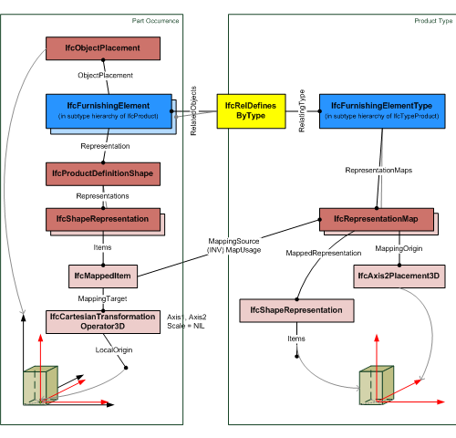
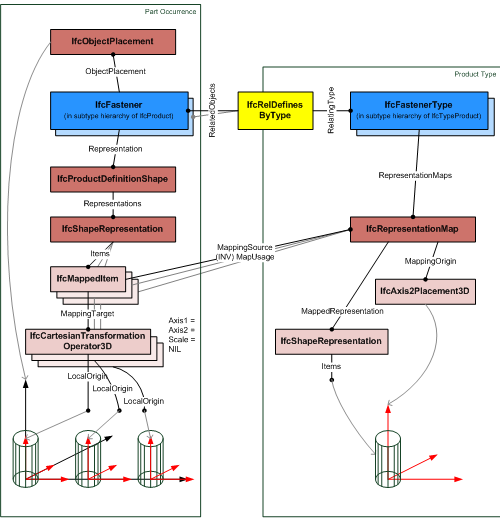

5.1.3.49 IfcTypeProduct
| Définition d'un type de produit |
| Produkt (allgemein) - Typ |
IfcTypeProduct defines a type definition of a product without being already inserted into a
project structure (without having a placement), and not being included in the geometric representation context of the
project. It is used to define a product specification, that is, the specific product information that is common to all occurrences
of that product type.
An IfcTypeProduct may have a list of property set attached and an optional set of product representations. Values of these properties and the representation maps are common to all occurrences of that product type. The type-occurrence relationship is realized using the objectified relationship
IfcRelDefinesByType.
NOTE The product representations are defined as representation maps, which may be assigned by a product instance through the representation item(s) being an IfcShapeRepresentation and having Items of type IfcMappedItem.
The representations at the occurrence level (represented by subtypes of IfcProduct) can override the specific representations at the type level:
- for geometric representations, a Cartesian transformation operator can be applied at the occurrence level.
- for property sets, a property within an occurrence property set, assigned at the product occurrence, overrides the same property assigned to the product type.
An IfcTypeProduct may be exchanged without being
already assigned to subtypes of IfcProduct.
HISTORY New entity in IFC2x.
IFC4 CHANGE The entity IfcTypeProduct shall not be instantiated from IFC4 onwards. It will be changed into an ABSTRACT supertype in future releases of IFC.
Geometry use definition
The RepresentationMaps define the type product shape
and multiple geometric representations can be assigned. If a
product occurrence is assigned to the type by using the
IfcRelDefinesByType relationship, then these occurrences
have to reference the representation maps. The reference is
created by one or multiple IfcShapeRepresentation's having
an IfcMappedItem as Items, that places the
IfcRepresentationMap of the type product into the spatial
contexts, i.e. by using an Cartesian transformation operator to
transform the IfcRepresentationMap into the object
coordinate system of the product occurrence.
Figure 101 illustrates an example of referencing a representation map by
the shape representation of a product occurrence. Here the
Cartesian transformation operator only uses translation, but no
rotation, mirroring, or scaling.
 |
Figure 101 — Product type geometry with single placement |
Figure 102 illustrates an example of referencing a representation
multiple times map by the shape representation of a product
occurrence. Here the Cartesian transformation operator only uses
translation, but no rotation, mirroring, or scaling. The
different translation values determine the pattern of the
multiple placement.
 |
Figure 102 — Product type geometry with multiple placement |
XSD Specification:
<xs:element name="IfcTypeProduct" type="ifc:IfcTypeProduct" substitutionGroup="ifc:IfcTypeObject" nillable="true"/>
<xs:complexType name="IfcTypeProduct">
<xs:complexContent>
<xs:extension base="ifc:IfcTypeObject">
<xs:sequence>
<xs:element name="RepresentationMaps" nillable="true" minOccurs="0">
<xs:complexType>
<xs:sequence>
<xs:element ref="ifc:IfcRepresentationMap" maxOccurs="unbounded"/>
</xs:sequence>
<xs:attribute ref="ifc:itemType" fixed="ifc:IfcRepresentationMap"/>
<xs:attribute ref="ifc:cType" fixed="list-unique"/>
<xs:attribute ref="ifc:arraySize" use="optional"/>
</xs:complexType>
</xs:element>
</xs:sequence>
<xs:attribute name="Tag" type="ifc:IfcLabel" use="optional"/>
</xs:extension>
</xs:complexContent>
</xs:complexType>
EXPRESS Specification:
|
|
| ApplicableOccurrence | : | NOT(EXISTS(SELF\IfcTypeObject.Types[1])) OR
(SIZEOF(QUERY(temp <* SELF\IfcTypeObject.Types[1].RelatedObjects |
NOT('IFCKERNEL.IFCPRODUCT' IN TYPEOF(temp)))
) = 0); |
|
 EXPRESS-G diagram
EXPRESS-G diagram
Attribute Definitions:
| RepresentationMaps | : | List of unique representation maps. Each representation map describes a block definition of the shape of the product style. By providing more than one representation map, a multi-view block definition can be given. |
| Tag | : | The tag (or label) identifier at the particular type of a product, e.g. the article number (like the EAN). It is the identifier at the specific level. |
| ReferencedBy | : |
Reference to the IfcRelAssignsToProduct relationship, by which other products, processes, controls, resources or actors (as subtypes of IfcObjectDefinition) can be related to this product type.
IFC4 CHANGE New inverse relationship.
|
Formal Propositions:
| ApplicableOccurrence | : |
The product type (or style), if assigned to an object, shall only be assigned to object being a sub type of IfcProduct.
|
Inheritance Graph:
 Link to this page
Link to this page